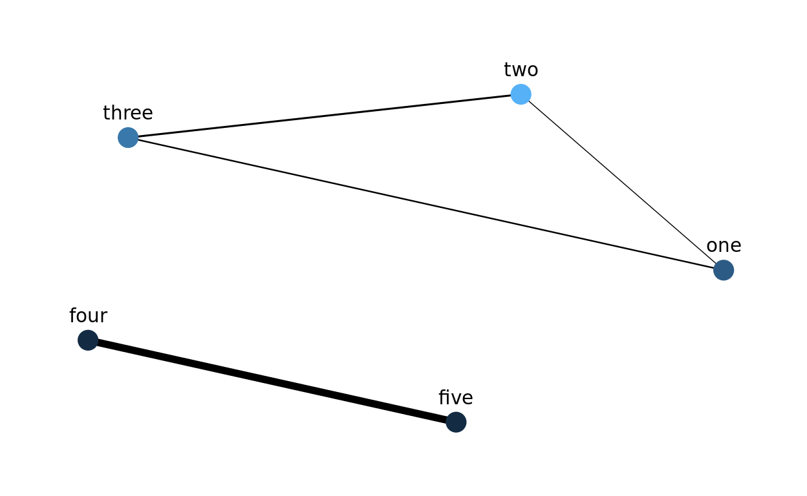

An example of progressively optimizing the speed of a function
For one of my projects, I needed to calculate the pairwise overlaps of many sets, and my initial brute force approach was unbearably slow. And even after making some of the more obvious optimizations, it was still quite slow. Fortunately I got a good tip from Nir Graham when I posted on RStudio Community. Below I explain the problem in more detail, and then demonstrate how I progressively optimized the function for increased speed.1
The final solution is still brute force, just faster. If you know of a clever algorithm for finding pairwise overlaps2, please do get in touch.
First, why do I need to do this? I suspect there are many use cases for computing pairwise overlaps, but in my specific case I wanted to compare the similarity of biological annotation terms after having performed a gene set enrichment anlaysis. For those unfamiliar with omics-style analyses, the results are usually a list of biological features with varying levels of statistical signficance (e.g.which proteins change in relative abundance between control versus treated cells). To help interpretation, the list of results is compared to curated databases of annotation terms such as Gene Ontology categories or KEGG pathways. While they are usually more sophisticated, conceptually you can imagine a chi-squared test of a contingency table comparing the features in the results list with the features in each annotation category:
| Test | Feature in results | Feature not in results |
|---|---|---|
| Feature in annotation | x | y |
| Feature not in annotation | z | w |
If a given annotation category contains more of the results than would be expected by chance, then this category is said to be enriched.
A major hurdle for interpreting enrichment results is that the annotation categories often contain many of the same features, and thus the results can be very redundant. For example, how different are the categories cellular response to stress and response to stress? Thus it would be nice to have a metric of how related the categories are when interpeting the enrichment results.
Specifically Id like to calculate three measurements:
This will be especially useful for a network visualization of the enrichment results, where the color of the nodes could correspond to the statistical significance, and the thickness of the eges could correspond to the Jaccard index. For example, the hypothetical results below demonstrate that there are two main sources of enrichment, even though five categories are statistically significant:

The essential problem that this post deals with is the fact that as the number of sets increases, the number of pairwise overlaps to be calculated explodes. 100 sets require 4,950 pairwise overlaps, but 1000 sets require 499,500. To be more precise, this is a combinatorial relationship, in which the number of pairwise overlaps is determined by the number of unique combinations of size 2 of the \(n\) sets:
\[ \binom{n}{2} = \frac {n!} {2!(n-2)!} \] In R, Ill use the function choose() to perform this calculation.
Below is a visualization of the combinatorial explosion in the number of pairwise overlaps:
In my application, I have multiple biological annotations that have thousands of sets to compare. Thus I need the overlap calculations to be quick since theyll be performed millions of times.
To benchmark my implementations, I created the function simulate_sets() to create a list with a given number of elements containing character vectors.
simulate_sets <- function(n_sets) {
universe <- c(letters, LETTERS)
sets <- replicate(n_sets,
sample(universe, size = rpois(1, lambda = 15)),
simplify = FALSE)
names(sets) <- paste0("set", seq(n_sets))
return(sets)
}The elements in the sets consist of lowercase and uppercase letters. Heres what the output looks like:
set.seed(12345)
(sets_5 <- simulate_sets(n_sets = 5))
$set1
[1] "p" "z" "B" "x" "C" "k" "F" "W" "b" "v" "U" "L" "M" "D" "j" "q"
[17] "T"
$set2
[1] "L" "D" "a" "l" "t" "h" "W" "c" "i" "n" "m" "V" "p" "N"
$set3
[1] "H" "O" "F" "y" "J" "N" "k" "L" "i" "e" "o" "s" "q" "U" "K" "c"
[17] "Y" "m"
$set4
[1] "W" "j" "Q" "A" "H" "R" "I" "S" "v" "P" "w" "E" "z" "g" "o" "K"
[17] "X" "l" "N" "x" "c"
$set5
[1] "d" "k" "W" "c" "j" "o" "g" "P" "z" "Z" "B" "Q" "F" "r" "a" "S"
sets_100 <- simulate_sets(n_sets = 100)
sets_1000 <- simulate_sets(n_sets = 1000)For my first pass, I use a nested for loop to iterate over the names of the lists. The main advantages of this approach is that it was quick to write and it is straightforward to read the code. The essential part of this strategy is contained in the snippet below:
for (name1 in names(sets)) {
set1 <- sets[[name1]]
for (name2 in names(sets)) {
set2 <- sets[[name2]]
}
}Heres the entire function:
calc_pairwise_overlaps <- function(sets) {
vec_name1 <- character()
vec_name2 <- character()
vec_num_shared <- integer()
vec_overlap <- numeric()
vec_jaccard <- numeric()
for (name1 in names(sets)) {
set1 <- sets[[name1]]
for (name2 in names(sets)) {
set2 <- sets[[name2]]
set_intersection <- intersect(set1, set2)
num_shared <- length(set_intersection)
overlap <- num_shared / min(length(set1), length(set2))
jaccard <- num_shared / length(union(set1, set2))
vec_name1 <- c(vec_name1, name1)
vec_name2 <- c(vec_name2, name2)
vec_num_shared <- c(vec_num_shared, num_shared)
vec_overlap <- c(vec_overlap, overlap)
vec_jaccard <- c(vec_jaccard, jaccard)
}
}
result <- data.frame(name1 = vec_name1,
name2 = vec_name2,
num_shared = vec_num_shared,
overlap = vec_overlap,
jaccard = vec_jaccard,
stringsAsFactors = FALSE)
return(result)
}There are of course lots of things to be improved, as youll see below, but if you have 100 sets or fewer, it probably wouldnt be worth the effort to optimize it further.
head(calc_pairwise_overlaps(sets_100))
name1 name2 num_shared overlap jaccard
1 set1 set1 21 1.0000000 1.0000000
2 set1 set2 5 0.2777778 0.1470588
3 set1 set3 8 0.4210526 0.2500000
4 set1 set4 9 0.4500000 0.2812500
5 set1 set5 7 0.6363636 0.2800000
6 set1 set6 6 0.4000000 0.2000000
system.time(calc_pairwise_overlaps(sets_100))
user system elapsed
0.965 0.016 0.981 One big issue with the strategy above is that each pairwise combination is performed twice. In other words, I calculated the overlap statistics for each permutation of the sets, when I really only need to calculate each combination. The second issue Ill address in this iteration is how to fetch each set. Above I obtained each set by name, sets[[name1]], which requires searching over the names of the list to find a match. While convenient, this gets slower as the list grows. Thus instead of looping over the names of the list, it is better to use an index variable to track the position in the list. This allows the sets to be quickly obtained via their position in the list.
The essential part of this update is in the snippet below. The index variables i and j are used to obtain the name of the sets and their contents in each iteration. Furthermore, j is always greater than i, to avoid comparing a set to itself or repeating any previous combinations.
n_sets <- length(sets)
set_names <- names(sets)
for (i in seq_len(n_sets - 1)) {
name1 <- set_names[i]
set1 <- sets[[i]]
for (j in seq(i + 1, n_sets)) {
name2 <- set_names[j]
set2 <- sets[[j]]
}
}Heres the updated function:
calc_pairwise_overlaps <- function(sets) {
n_sets <- length(sets)
set_names <- names(sets)
vec_name1 <- character()
vec_name2 <- character()
vec_num_shared <- integer()
vec_overlap <- numeric()
vec_jaccard <- numeric()
for (i in seq_len(n_sets - 1)) {
name1 <- set_names[i]
set1 <- sets[[i]]
for (j in seq(i + 1, n_sets)) {
name2 <- set_names[j]
set2 <- sets[[j]]
set_intersection <- intersect(set1, set2)
num_shared <- length(set_intersection)
overlap <- num_shared / min(length(set1), length(set2))
jaccard <- num_shared / length(union(set1, set2))
vec_name1 <- c(vec_name1, name1)
vec_name2 <- c(vec_name2, name2)
vec_num_shared <- c(vec_num_shared, num_shared)
vec_overlap <- c(vec_overlap, overlap)
vec_jaccard <- c(vec_jaccard, jaccard)
}
}
result <- data.frame(name1 = vec_name1,
name2 = vec_name2,
num_shared = vec_num_shared,
overlap = vec_overlap,
jaccard = vec_jaccard,
stringsAsFactors = FALSE)
return(result)
}With these two improvements, the computation time more than halved for a list of 100 sets. However, it is still quite slow when running 1000 sets.
system.time(calc_pairwise_overlaps(sets_100))
user system elapsed
0.300 0.016 0.316 And these improvements are essentially the advice from this StackOverflow answer on the same topic.
The next issue Ill address is a common cause of slow R code: growing objects during each iteration of a loop, e.g.vec_overlap <- c(vec_overlap, overlap). This may be convenient, but it is extremely slow. The solution is to preallocate the vectors to their final length, and then add new data by index.
In this case, the final length will be the total number of combinations, which I calculate using the function choose(). Furthermore, I add a new index variable, overlaps_index, to keep track of the combinations. The essential code to preallocate the vectors is in the code snippet below:
# preallocate the vectors
n_overlaps <- choose(n = n_sets, k = 2)
vec_name1 <- character(length = n_overlaps)
vec_name2 <- character(length = n_overlaps)
vec_num_shared <- integer(length = n_overlaps)
vec_overlap <- numeric(length = n_overlaps)
vec_jaccard <- numeric(length = n_overlaps)
overlaps_index <- 1
# During each iteration, use the index to assign the latest value to the output
# vectors
vec_name1[overlaps_index] <- name1
vec_name2[overlaps_index] <- name2
vec_num_shared[overlaps_index] <- num_shared
vec_overlap[overlaps_index] <- overlap
vec_jaccard[overlaps_index] <- jaccard
overlaps_index <- overlaps_index + 1And heres the updated function:
calc_pairwise_overlaps <- function(sets) {
n_sets <- length(sets)
set_names <- names(sets)
n_overlaps <- choose(n = n_sets, k = 2)
vec_name1 <- character(length = n_overlaps)
vec_name2 <- character(length = n_overlaps)
vec_num_shared <- integer(length = n_overlaps)
vec_overlap <- numeric(length = n_overlaps)
vec_jaccard <- numeric(length = n_overlaps)
overlaps_index <- 1
for (i in seq_len(n_sets - 1)) {
name1 <- set_names[i]
set1 <- sets[[i]]
for (j in seq(i + 1, n_sets)) {
name2 <- set_names[j]
set2 <- sets[[j]]
set_intersection <- intersect(set1, set2)
num_shared <- length(set_intersection)
overlap <- num_shared / min(length(set1), length(set2))
jaccard <- num_shared / length(union(set1, set2))
vec_name1[overlaps_index] <- name1
vec_name2[overlaps_index] <- name2
vec_num_shared[overlaps_index] <- num_shared
vec_overlap[overlaps_index] <- overlap
vec_jaccard[overlaps_index] <- jaccard
overlaps_index <- overlaps_index + 1
}
}
result <- data.frame(name1 = vec_name1,
name2 = vec_name2,
num_shared = vec_num_shared,
overlap = vec_overlap,
jaccard = vec_jaccard,
stringsAsFactors = FALSE)
return(result)
}With the preallocation, the overlaps of 100 sets is almost instantaneous:
system.time(calc_pairwise_overlaps(sets_100))
user system elapsed
0.09 0.00 0.09 And it can even handle 1000 sets in a reasonable amount of time:
system.time(calc_pairwise_overlaps(simulate_sets(n_sets = 1000)))
user system elapsed
7.912 0.020 7.932 But I had thousands of sets to compare, and this was still slow.
After making the above changes, I was stumped as to how to further increase its speed, so I posted on RStudio Community for ideas. And I was lucky to get the advice from Nir Graham to speed up Rs set functions like intersect() by checking the inputs once instead of during every overlap calculation.
The function intersect() converts its inputs to vectors with as.vector() and also removes duplicates by calling unique().
intersect
function (x, y)
{
y <- as.vector(y)
unique(y[match(as.vector(x), y, 0L)])
}
<bytecode: 0x55e29093f8a8>
<environment: namespace:base>Since these calculations are performed during each pairwise overlap, they are extremely redundant. It is faster to confirm all the input sets are unique vectors at the very beginning of the function, since then the code no longer needs to check during each iteration of the loop. When valid input can be assumed, intersect() reduces to:
y[match(x, y, 0L)]Its a similar situation with union(). It also converts its inputs to vectors with as.vector(). However, it does require the call to unique() to properly find the union of the two sets.
union
function (x, y)
unique(c(as.vector(x), as.vector(y)))
<bytecode: 0x55e29117c3d8>
<environment: namespace:base>But even unique() itself can be sped up. Since there is no specific unique() method for character vectors (i.e.unique.character()), character vectors are processed with unique.default().
methods(unique)
[1] unique.array unique.bibentry*
[3] unique.data.frame unique.default
[5] unique.igraph.es* unique.igraph.vs*
[7] unique.matrix unique.numeric_version
[9] unique.POSIXlt unique.vctrs_sclr*
[11] unique.vctrs_vctr* unique.warnings
see '?methods' for accessing help and source code
unique.default
function (x, incomparables = FALSE, fromLast = FALSE, nmax = NA,
...)
{
if (is.factor(x)) {
z <- .Internal(unique(x, incomparables, fromLast, min(length(x),
nlevels(x) + 1L)))
return(factor(z, levels = seq_len(nlevels(x)), labels = levels(x),
ordered = is.ordered(x)))
}
z <- .Internal(unique(x, incomparables, fromLast, nmax))
if (inherits(x, "POSIXct"))
structure(z, class = class(x), tzone = attr(x, "tzone"))
else if (inherits(x, "Date"))
structure(z, class = class(x))
else z
}
<bytecode: 0x55e28eee5e58>
<environment: namespace:base>And the majority of unique.default() is code to handle various types of input like factors, times, or dates. Since I will ensure the input will always be character vectors, the only required line of unique.default() is the one below:
z <- .Internal(unique(x, incomparables, fromLast, nmax))So in this final optimized function, the input sets are first confirmed to be unique character vectors at the very beginning of the function, and then this assumption is never tested unnecessarily again.
calc_pairwise_overlaps <- function(sets) {
# Ensure that all sets are unique character vectors
sets_are_vectors <- vapply(sets, is.vector, logical(1))
if (any(!sets_are_vectors)) {
stop("Sets must be vectors")
}
sets_are_atomic <- vapply(sets, is.atomic, logical(1))
if (any(!sets_are_atomic)) {
stop("Sets must be atomic vectors, i.e. not lists")
}
sets <- lapply(sets, as.character)
is_unique <- function(x) length(unique(x)) == length(x)
sets_are_unique <- vapply(sets, is_unique, logical(1))
if (any(!sets_are_unique)) {
stop("Sets must be unique, i.e. no duplicated elements")
}
n_sets <- length(sets)
set_names <- names(sets)
n_overlaps <- choose(n = n_sets, k = 2)
vec_name1 <- character(length = n_overlaps)
vec_name2 <- character(length = n_overlaps)
vec_num_shared <- integer(length = n_overlaps)
vec_overlap <- numeric(length = n_overlaps)
vec_jaccard <- numeric(length = n_overlaps)
overlaps_index <- 1
for (i in seq_len(n_sets - 1)) {
name1 <- set_names[i]
set1 <- sets[[i]]
for (j in seq(i + 1, n_sets)) {
name2 <- set_names[j]
set2 <- sets[[j]]
set_intersect <- set1[match(set2, set1, 0L)]
set_union <- .Internal(unique(c(set1, set2), incomparables = FALSE,
fromLast = FALSE, nmax = NA))
num_shared <- length(set_intersect)
overlap <- num_shared / min(length(set1), length(set2))
jaccard <- num_shared / length(set_union)
vec_name1[overlaps_index] <- name1
vec_name2[overlaps_index] <- name2
vec_num_shared[overlaps_index] <- num_shared
vec_overlap[overlaps_index] <- overlap
vec_jaccard[overlaps_index] <- jaccard
overlaps_index <- overlaps_index + 1
}
}
result <- data.frame(name1 = vec_name1,
name2 = vec_name2,
num_shared = vec_num_shared,
overlap = vec_overlap,
jaccard = vec_jaccard,
stringsAsFactors = FALSE)
return(result)
}Again, 100 sets is calculated almost instantaneously.
system.time(calc_pairwise_overlaps(sets_100))
user system elapsed
0.057 0.000 0.057 And even 1000 sets is finished processing in only a few seconds:
system.time(calc_pairwise_overlaps(sets_1000))
user system elapsed
2.444 0.011 2.456 In this post, I demonstrated how to iteratively increase the speed of a slow function. The biggest lesson I learned from this experience is that it is possible to increase the speed of base R functions since they may be designed to handle multiple different types of inputs.
If you see any ways that this function could be further optimized, please do let me know!
Click here to view the R session information:
sessionInfo()
R version 3.6.3 (2020-02-29)
Platform: x86_64-pc-linux-gnu (64-bit)
Running under: Ubuntu 18.04.4 LTS
Matrix products: default
BLAS: /usr/lib/x86_64-linux-gnu/blas/libblas.so.3.7.1
LAPACK: /usr/lib/x86_64-linux-gnu/lapack/liblapack.so.3.7.1
locale:
[1] LC_CTYPE=en_US.UTF-8 LC_NUMERIC=C
[3] LC_TIME=en_US.UTF-8 LC_COLLATE=en_US.UTF-8
[5] LC_MONETARY=en_US.UTF-8 LC_MESSAGES=en_US.UTF-8
[7] LC_PAPER=en_US.UTF-8 LC_NAME=C
[9] LC_ADDRESS=C LC_TELEPHONE=C
[11] LC_MEASUREMENT=en_US.UTF-8 LC_IDENTIFICATION=C
attached base packages:
[1] stats graphics grDevices utils datasets methods
[7] base
other attached packages:
[1] tidygraph_1.1.2 ggraph_2.0.2 ggplot2_3.3.0 rstudioapi_0.11
[5] rmarkdown_2.1 fs_1.4.0 git2r_0.26.1
loaded via a namespace (and not attached):
[1] Rcpp_1.0.4 compiler_3.6.3 pillar_1.4.3
[4] viridis_0.5.1 tools_3.6.3 digest_0.6.25
[7] viridisLite_0.3.0 evaluate_0.14 lifecycle_0.2.0
[10] tibble_3.0.0 gtable_0.3.0 pkgconfig_2.0.3
[13] rlang_0.4.5 igraph_1.2.5 cli_2.0.2
[16] ggrepel_0.8.2 distill_0.7 yaml_2.2.1
[19] xfun_0.11 gridExtra_2.3 withr_2.1.2
[22] stringr_1.4.0 dplyr_0.8.5 knitr_1.28
[25] graphlayouts_0.6.0 vctrs_0.2.4 grid_3.6.3
[28] tidyselect_1.0.0 glue_1.3.2 R6_2.4.1
[31] fansi_0.4.1 polyclip_1.10-0 farver_2.0.1
[34] tweenr_1.0.1 tidyr_1.0.2 purrr_0.3.3
[37] magrittr_1.5 MASS_7.3-51.5 scales_1.1.0
[40] htmltools_0.4.0 ellipsis_0.3.0 assertthat_0.2.1
[43] ggforce_0.3.1 colorspace_1.4-1 labeling_0.3
[46] stringi_1.4.6 munsell_0.5.0 crayon_1.3.4 Note that I didnt take these exact steps. Real life is a lot messier. I purposefully chose to break the process down into the steps below for didactic purposes.
For example, this SO answer suggests a pseudo-mergesort might be a potential solution, but doesnt provide an implementation.
If you see mistakes or want to suggest changes, please create an issue on the source repository.
Text and figures are licensed under Creative Commons Attribution CC BY 4.0. Source code is available at https://github.com/jdblischak/blog.jdblischak.com, unless otherwise noted. The figures that have been reused from other sources don't fall under this license and can be recognized by a note in their caption: "Figure from ...".
For attribution, please cite this work as
Blischak (2020, March 27). John Blischak's blog: How to efficiently calculate pairwise overlaps of many sets. Retrieved from https://blog.jdblischak.com/posts/pairwise-overlaps/
BibTeX citation
@misc{blischak2020how,
author = {Blischak, John},
title = {John Blischak's blog: How to efficiently calculate pairwise overlaps of many sets},
url = {https://blog.jdblischak.com/posts/pairwise-overlaps/},
year = {2020}
}